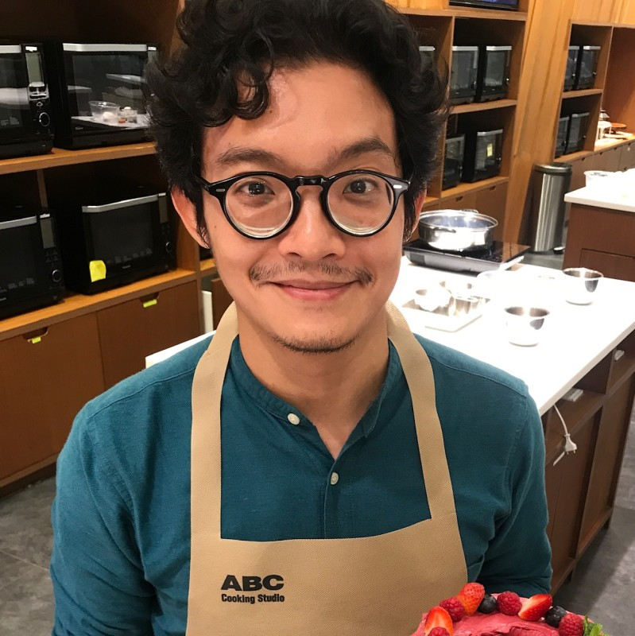

{{ a.category }}
{{ a.readLabel }}
{{ a.title }}
{{ a.dek }}

Timothy Abieza, B.Sc. PT · {{ t.authorRole }}
{{ a.dateLine }}
{{ a.reviewLine }}
{{ t.takeaways }}
- {{ k.text }}
{{ b.text }}
{{ b.text }}
- {{ i.text }}
- {{ i.n }}{{ i.text }}
{{ s.value }}
{{ s.label }}
{{ b.text }}
{{ i.text }}
{{ i.value }}
{{ t.faq }}
{{ t.aboutAuthor }}
Timothy Abieza, B.Sc. PT
{{ t.authorRole }}
{{ t.authorBio }}
{{ t.authorCreds }}